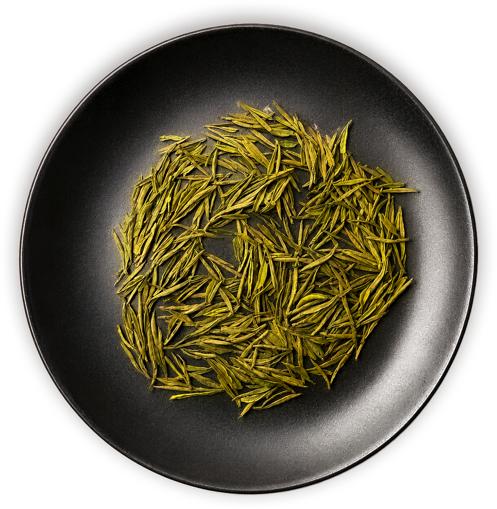
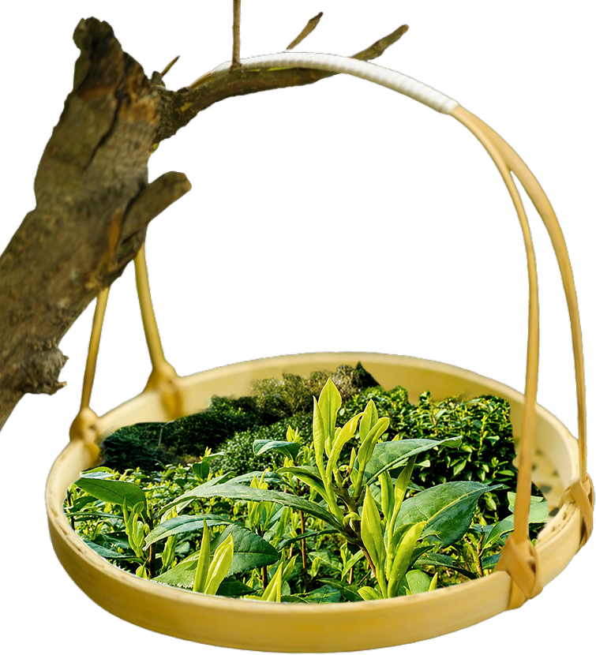
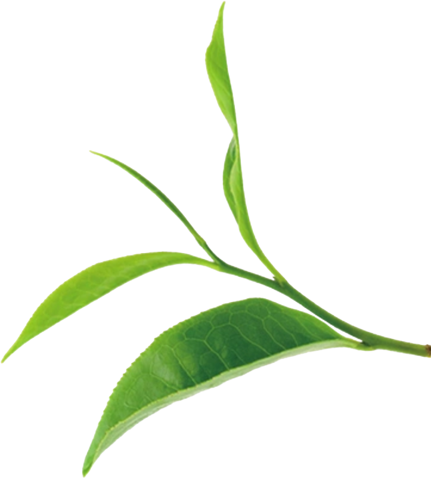
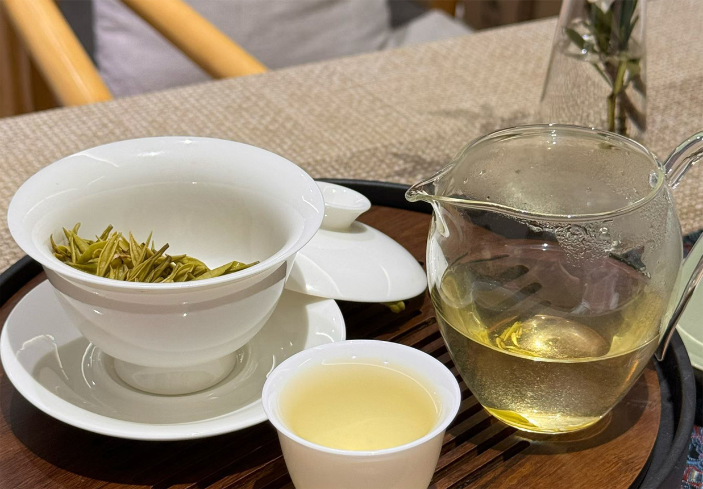
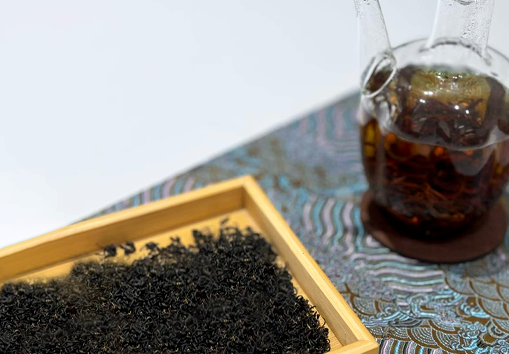
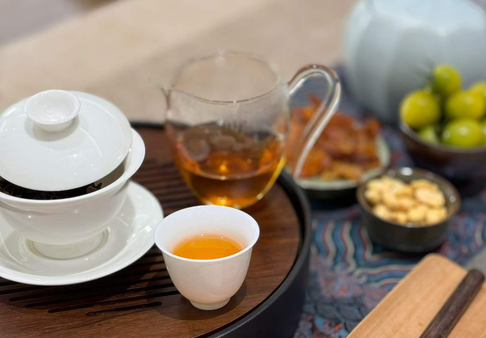
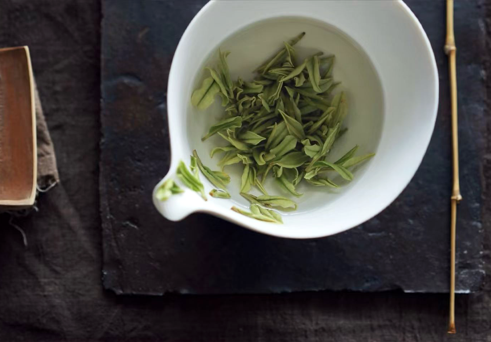
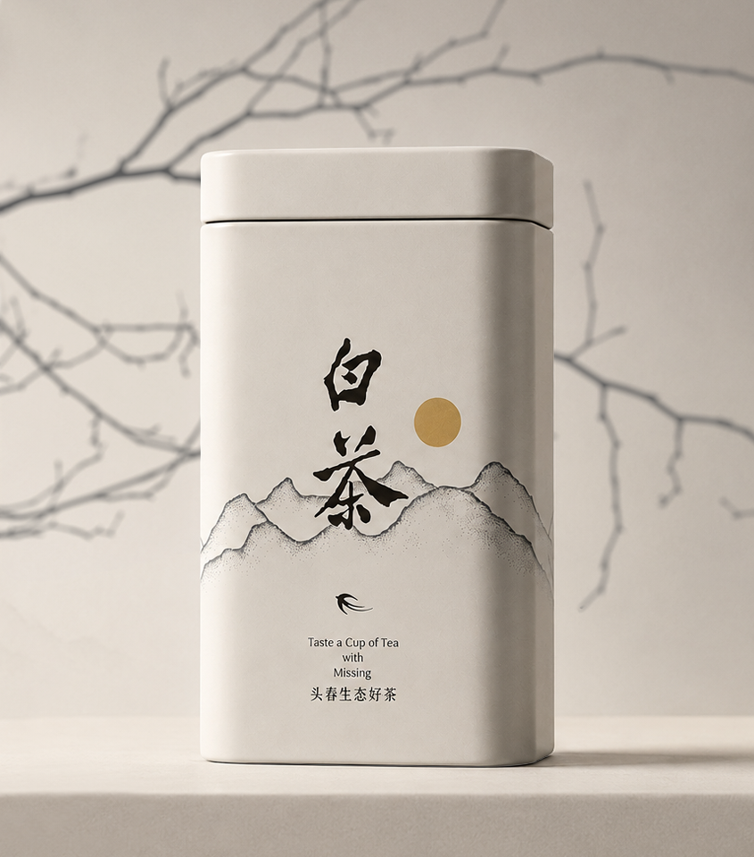

お茶づくりは、自然との対話から始まります。
豊かな土壌、清らかな水、そして季節ごとに移り変わる気候が、茶葉の味わいをかたちづくります。
私たちは、自然の力に寄り添いながら、余計な手を加えず、
その土地本来の恵みを生かすことを大切にしています。
そこから生まれる一杯のお茶には、
土地の記憶と自然の息づかいが
静かに宿っています。
環境そのものが、最高の職人であると私たちは考えています。
栄養豊かな土が
豊かな茶葉を
育てます
清らかな水が
お茶のおいしさを
引き出します
日差しや風など
自然の恵みが
香りを育てます
心を込めて育てる
自然とともに歩む
おいしさを届ける
お茶の魅力は、その香りと味わいの奥深さにあります。
一杯のお茶には、自然の恵みと職人の技が静かに息づいています。
茶葉が育つ環境や季節によって、香りも味も少しずつ異なり、
その繊細な変化を感じることができるのもお茶の楽しみのひとつです。
忙しい日常の中で、お茶を一口飲むことで心が落ち着き、
静かな時間と余白を取り戻すことができます。
お茶は単なる飲み物ではなく、心を整える小さな文化でもあります。



白茶は、やさしい香りと自然な甘みが魅力のお茶です。すっきりとした味わいの中に、まろやかな旨みが広がり、口当たりは軽やかで飲みやすいのが特徴です。 一杯ごとに広がる繊細な風味と穏やかな余韻は、忙しい日常に落ち着いた時間をもたらします。香りや味わいをゆっくり楽しみながら、心までやさしく満たしてくれるお茶です。

紅茶は、豊かな香りと深みのある味わいが魅力のお茶です。やさしい甘みとほどよい渋みが調和し、飲むたびに奥行きのある風味を楽しめます。 温かな香りと心地よい余韻は、くつろぎの時間をより豊かに彩ります。ゆったりとしたひとときに寄り添い、日常に落ち着きと安らぎをもたらしてくれる一杯です。

功夫茶は、お茶本来の香りや味わいを丁寧に引き出す伝統的な淹れ方です。少量の茶葉を用い、短い時間で何度も淹れることで、一煎ごとに移り変わる風味や香りを楽しめます。 一杯ずつゆっくりと味わう時間は、心を落ち着かせ、お茶と向き合う豊かなひとときを生み出します。

緑茶は、爽やかな香りとすっきりとした味わいが魅力のお茶です。ほどよい渋みと自然な甘みが調和し、口の中にやさしい旨みが広がります。 みずみずしい香りと心地よい余韻は、日々の暮らしに穏やかなひとときを添え、気分をリフレッシュさせてくれる一杯です。

茶葉が持つ本来の香りや味わいを大切にし、
毎日の暮らしにそっと寄り添う一杯をお届けします。
忙しい日々の中でも、お茶を淹れるひとときが、
心を整え、穏やかな時間へとつながります。
茶凪とともに、新しいお茶のある暮らしを始めてみませんか。

購入はこちら